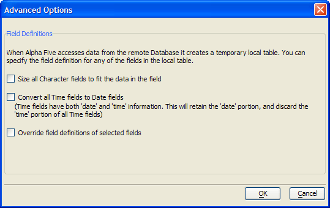
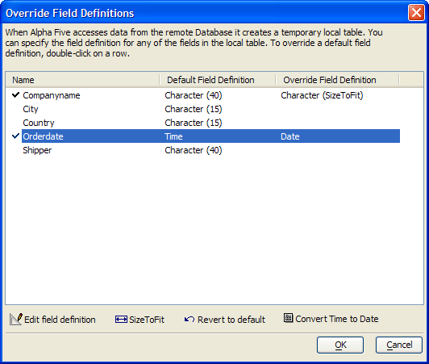
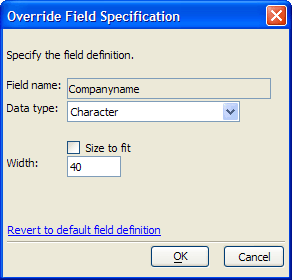

Advanced Options Dialog Box
When Alpha Anywhere retrieves data from a SQL database, it creates a temporary local table. You can specify the characteristics of any of the fields in this table.
Click Advanced Options on the Specify SQL Select Statement dialog.
Some data sources (such as Microsoft Excel ) do not specify field lengths. Optionally, select Size all Character fields to fit the data in the field.
Some data sources will present fields as the Time data type, when they only contain Date data. Optionally, select Convert all Time fields to Date fields.

If you did not select either of the options in steps 2 or 3, you may select Override field definitions of selected fields and click Field Definitions. This will display the Override Field Definitions dialog.

Override Field Definitions Dialog
Select any field an click Edit field definition to display the Override Field Specification dialog.
Optionally select a different data type from the Data type list. The options are:
"Character"
"Numeric"
"Exponent Numeric"
"Time"
"Short Time"
"Date"
"Logical"
"Memo"
"Rich Text Memo"
"Bitmap"
"JPEG Image"
"Image File Reference"
Depending on the data type selected, enter additional parameters.
Click Cancel to exit without saving your changes.
Click Revert to default field definition to undo any changes.
Click OK to save your changes and return to the Override Field Definitions dialog.

Optionally, select any field an click Size to Fit.
Optionally, select any field an click Convert Time to Date.
Click OK to return to the Advanced Options dialog.
See Also